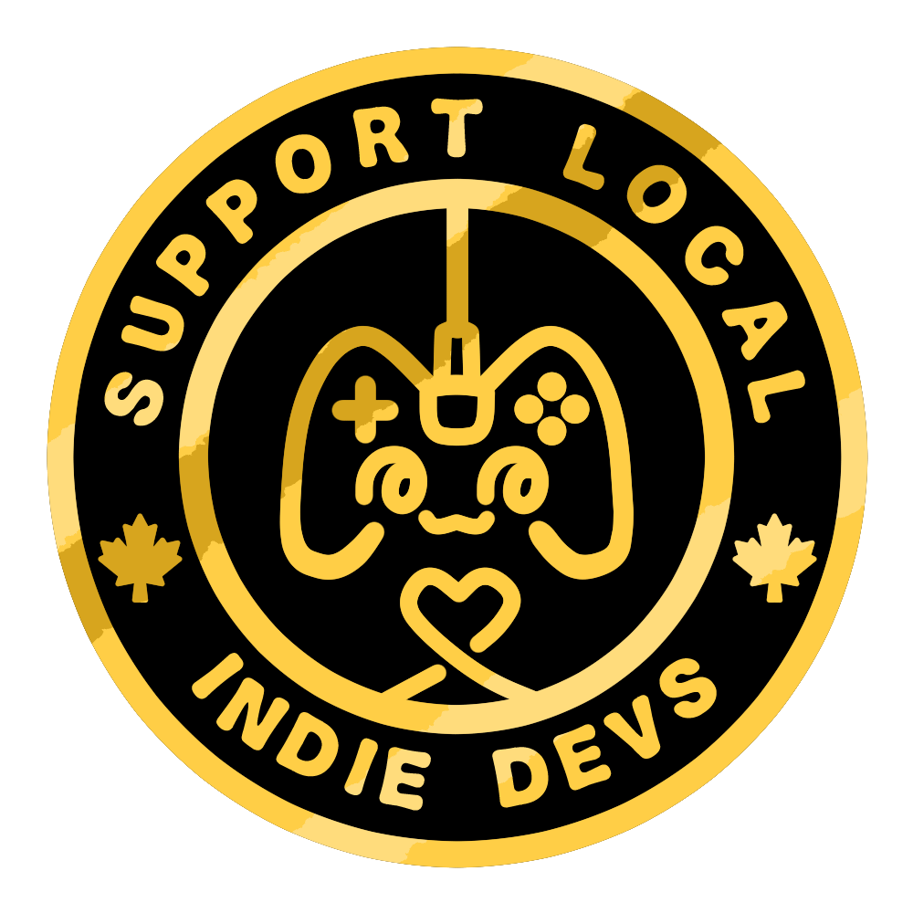
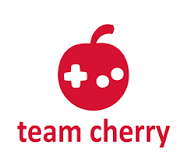
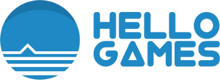
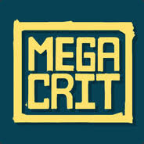

Level Up Games is a website created in 2026 by Oliver Steeves and Thomas Aussant.
We created this website to bring more attention to indie games made by some of the best developers in the industry.

And to better highlight the wonderful dev teams behind such projects, here's a little more info about them.
A three person indie game development studio behind award winning games, primarily the Hollow Knight series.
We chose Team Cherry because of their unparalelled ability to create detailed, immersive worlds with beautiful art, hard bosses, good combat with a great soundtrack. Hollow Knight Silksong has become one of the biggest indie releases of recent years, standing out for these reasons.

An independent game developer from Canada, LocalThunk is the developer behind the hit roguelike deck-building game Balatro.
We chose LocalThunk because of their innovative take on a simple gaming experience. Balatro is a prime example of how indie developers can make groundbreaking games that combat major releases.

An independent game studio known for creating critically acclaimed indie games such as the Hades series.
We chose them because of the consistently incredible work on Hades II. It's endless replayability among many other things made it standout to many people this year.

An independent game studio best known for their work on No Man's Sky.
We chose Hello Games not just because of their incredibly vast, enjoyable exploration game, but rather their dedication to it. Constantly adding new free updates, features and ways to build your own adventure.

An indepenent game studio best known for creating the Slay The Spire series.
We chose MegaCrit because of their great work on Slay The Spire 2. A successor to the original that does the very influential deckbuilding roguelike great justice, introducing new characters, cards, enemies and even multiplayer.
